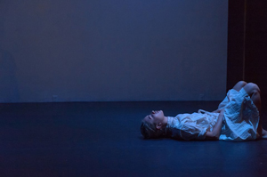

upcoming performance |
|||
|
the CURRENT SESSIONS: Volume V, Issue I. The CURRENT SESSIONS is a performing arts organization that develops and presents the work of emerging artists. Through the production of curated performances, residencies, artist-led laboratory sessions, and open discussions, the CURRENT SESSIONS acts as a center for creative research on contemporary dance and performance art. Our mission is to cultivate high-caliber dance works by early to mid-career choreographers whose practice focuses on critical and aesthetic experimentation while demonstrating bold decision making and a honed sense of creative intuition. We aim to provide a place for movement-based practices to thrive in New York City, serving as a space for furthering contemporary choreographic and artistic expression. |
 | ||
|
Volume V, Issue I. will primarily focus on works with a dance theatre/performance art influence and will feature works by 10 select choreographers and 3 guest artists. PROGRAMMING SCHEDULE Friday, March 13 at 730pm Saturday, March 14 at 730pm Sunday, March 15 at 3pm with Talkback Sunday, March 15 at 7pm |
|||
upcoming performances |
|||
 |
|||
| EVQ Film Festival 2018 August 20-25 |
|||
performance archives |
|||
| 2018 | 2017 | 2016 | 2015 |
| 2014 | 2013 | 2012 | 2011 |
| 2010 | 2009 | 2008 | 2007 |